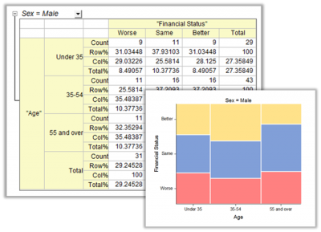
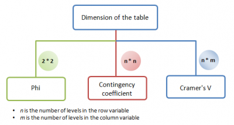

Kreuztabelle und Chi-Quadrat (nur Pro)
crosstab
Kreuztabelle und Chi-Quadrat (auch bekannt als Kontingenztabelle) ist eine Tabelle, die die Häufigkeitsverteilung der Variablen verdeutlicht. Die Analyse kann, basierend auf der Tabelle, bestimmen, ob es eine signifikante Beziehung gibt, die Stärke und Richtung der Beziehung ermitteln und die Übereinstimmung der passenden Datenpaare messen und testen. Sie ist verbreitet, wenn es um die Analyse kategorialer Daten geht.
- 
Ziele
Es gibt vier Hauptziele für die Kreuztabelle:
-
Häufigkeitsanalyse
- Zum Anzeigen der Häufigkeitsverteilung der Variablen in einen Tabellenformat sowie Berechnen der Anzahlen, Prozentanteile und sogar Residuen für jede Zelle
-
Test auf Unabhängigkeit
- Zum Bestimmen, ob eine signifikante Beziehung zwischen Variablen in der Kontingenztabelle besteht
-
Assoziation messen
- Zum Bewerten der Stärke und Richtung der Beziehung zwischen den Variablen in der Kontingenztabelle
-
Übereinstimmung messen
- Zum Testen oder Messen in welchem Umfang zwei verschiedene Prüfer oder zwei verschiedene Bewertungssysteme übereinstimmen. Zum Beispiel kann diese Option für die Betrachtung verwendet werden, wie konsistent die Prüfer ihre Entscheidungen treffen, z.B. beim Übereinstimmen bzw. Nicht-Übereinstimmen hinsichtlich einer Aussage.
Verarbeitungsvorgang
Analysedaten vorbereiten
Die Analyse von Kreuztabelle und Chi-Quadrat kann für Rohdaten oder Häufigkeitsdaten durchgeführt werden.
- Rohdaten
- Es gibt eine Spalte für jede Variable, und jede Zeile stellt eine Beobachtung dar.
- Häufigkeitsdaten
- Es gibt eine Spalte für jede Variable und eine Spalte der Häufigkeiten. Jede Zeile stellt eine Stufe in der Gruppe dar. Die Spalte der Häufigkeiten stellt die Anzahlen der Beobachtungen für die Stufe in den Daten dar.
- Zum Beispiel:
-
| Geschlecht |
Häufigkeiten |
| Weiblich |
15 |
| Männlich |
21 |
Rand- und Zellenstatistik für Kontingenztabelle auswählen
Anzahlen
- Anzahlen
- Die beobachtete Häufigkeit für jede Zelle
- Erwartete Anzahlen
- Die beobachtete Häufigkeit für jede Zelle unter der Annahme, dass die Spalten- und Zeilenvariable unabhängig sind
Prozentanteile
- Prozentanteile der Zeilenanzahlen (Zeile %)
- Prozentanteil jeder Zellenanzahl an der Zeilensumme
- Prozentanteile der Spaltenanzahlen (Spalte %)
- Prozentanteil jeder Zellenanzahl an der Spaltensumme
- Prozentanteile der Gesamtanzahlen (Gesamt %)
- Prozentanteil jeder Zellenanzahl und Randsumme an der Gesamtsumme
Residuen
Origin stellt drei Arten von Residuen bereit. Je näher der Wert bei Null liegt, desto wahrscheinlicher haben die Spalten- und Zeilenvariable keine Assoziation. Weitere Informationen finden Sie auf der Seite Ergebnisse interpretieren.
- Residuen
- Die Differenz zwischen dem beobachteten Wert und dem erwarteten Wert.
- Standardisierte Residuen
- Wird auch als Residuum nach Pearson bezeichnet. Es standardisiert Residuen, indem sie durch die Quadratwurzel der erwarteten Anzahl geteilt werden.
- Korrigierte Residuen
- Es wird weiter standardisiert, indem der Gesamtumfang der Stichprobe berücksichtigt wird. Es ist das nützlichste Residuum zum Vergleichen von Residuen zwischen verschiedenen Zellen.
Methoden für Test auf Unabhängigkeit auswählen
Origin stellt zwei Methoden zur Verfügung, mit denen getestet werden kann, ob eine signifikante Beziehung zwischen den Variablen in der Kontingenztabelle besteht.
- Chi-Quadrat-Test
- Hier handelt es sich um einen weit verbreiteten Test der Hypothese, dass die Zeilen- und Spaltenvariablen unabhängig sind.
- Fishers Exakter Test
- Fishers Exakter Test ist nur für 2*2-Tabellen verfügbar. Er ist besonders nützlich, wenn Stichprobenumfänge klein sind (sogar 0 in einigen Zellen) und der Chi-Quadrat-Test nicht angemessen ist.
Methoden zum Messen der Assoziation auswählen
Maße für nominale Variablen
Chi-Quadrat-basierte Messungen
- Phi
- Phi ist eine Statistik, die das Chi-Quadrat korrigiert, indem sie den Stichprobenumfang berücksichtigt. Normalerweise wird es verwendet, um 2*2-Tabellen zu vergleichen.
- Kontingenzkoeffizient
- Der Kontingenzkoeffizient ist eine weitere Statistik, die das Chi-Quadrat unter Berücksichtigung des Stichprobenumfangs korrigiert. Wie bei Phi wird nicht empfohlen, zwischen Tabellen verschiedener Dimensionen zu vergleichen. Wenn die Tafeln aber die gleichen Dimensionen haben (gleiches n und gleiches m, während n,m > 2), ist es nützlich. Im Vergleich zu Phi handelt es sich um eine Art standardisierter Statistik, so dass Anwender die Statistik mit 1 vergleichen können, um die Assoziation zwischen Variablen zu messen, wenn n > 2 und m > 2.
- Cramérs V
- Eine Statistik, die das Chi-Quadrat korrigiert, sowohl mit dem Stichprobenumfang als auch mit der Dimension der Tafel (n*m). Sie wird gemeinhin verwendet, um die Assoziation zwischen Tabellen, die verschiedene Dimensionen haben, zu vergleichen.
-
- 
PRE-Messungen
- Lambda
- Lambda ist das am weitesten verbreitete Maß für die proportionale Reduktion von Fehlern (PRE). Hier geht es darum herauszufinden, zu welchem Prozentanteil wir unseren Fehler reduzieren, wenn wir die unabhängige Variable verwenden, um die abhängige Variable zu prognostizieren. Wenn die abhängige Variable mit der unabhängigen Variable (Lambda = 0) nicht prognostizierbar ist, ist es wahrscheinlicher, dass die zwei Variablen keine Assoziation haben.
- Unsicherheitskoeffizient
- Der Unsicherheitskoeffizient ist ein weiteres PRE-Maß. Allerdings ist es konservativer als Lambda.
Maße für ordinale Variablen
- Gamma
- Klassische Statistik für ordinale Variablen Keine Korrektur für Beziehungen
- Kendalls Tau-b und Tau-c
- Die am weitesten verbreitete Statistik für ordinale Variablen. Sie ähnelt Gamma, korrigiert jedoch Beziehungen. Kendalls Tau-b wird für n*n-Tabellen verwendet, während Tau-c für n*m-Tabellen verwendet wird.
- Somers D
- Anders als Gamma und Kendalls Tau-b und Tau-b ist Somers D eine asymmetrische Statistik. Sie ist geeignet, wenn Sie identifizieren möchten, welche Variable von einer anderen abhängt. Dies ist zum Beispiel nützlich, wenn es zu erkennen gilt, ob es eine Assoziation zwischen den Noten in Prüfungen (1,2,3,4,5) und der Lernzeit außerhalb der Schule pro Woche (5~10hr, 10~15hr ect...) gibt. Die Prüfungsnote ist die abhängige Variable und die außerschulische Lernzeit pro Woche ist die unabhängige Variable.
Methoden zum Messen der Übereinstimmung auswählen
- Kappa
- Kappa wird auch als Cohens Kappa bezeichnet. Mit diesem Test wird bestimmt, ob zwei Prüfer miteinander übereinstimmen und in welchem Umfang zwei Prüfer miteinander übereinstimmen, wenn sie aufgerufen sind, das gleiche Objekt zu bewerten.
- Bowkers Test
- Wird auch als Test auf Symmetrie nach Bowker/McNemar bezeichnet. Der McNemar-Test wird für 2*2-Tabellen und Bowkers Test für n*n-Tabellen verwendet. Der Test misst die Übereinstimmung der verbundenen Datenpaare, dass jede Beobachtung eines Prüfers mit der Beobachtung des anderen Prüfers übereinstimmt. Zum Beispiel wird getestet, ob der Anteil normaler Patienten von Prüfer 1 gleich dem Anteil normaler Patienten von Prüfer 2 ist, wenn sie die gleiche Patientengruppe bewerten.
Andere Maße auswählen
- Quotenverhältnis
- Diese Option ist nur für eine 2*2-Tabelle verfügbar. Das Quotenverhältnis misst das Verhältnis der Wahrscheinlichkeit, dass ein Ereignis oder Ergebnis eintritt, zu der Wahrscheinlichkeit, dass das Ereignis nicht eintreten wird.
- Relatives Risiko
- Diese Option ist nur für 2*2-Tabellen verfügbar. Das relative Risiko misst das Verhältnis der Wahrscheinlichkeit, dass ein Ereignis in einer Gruppe eintritt, zu der Wahrscheinlichkeit, dass das Ereignis in einer Vergleichsgruppe eintritt.
- Cochran-Mantel-Haenszel
- Die Cochran-Mantel-Haenszel-Tests werden verwendet, um zu bewerten, ob es eine Beziehung zwischen der Zeilen- und Spaltenvariable gibt, nachdem die Layervariable kontrolliert wurde. Sie bestehen aus zwei Testtypen (Test auf bedingte Unabhängigkeit, Homogenitätstests des Quotenverhältnisses) und einem Schätzer des allgemeinen Quotenverhältnisses.
Kreuztabelle und Chi-Quadrat durchführen
- Wählen Sie Statistik: Deskriptive Statistik: Kreuztabelle und Chi-Quadrat.
- Oder
- Geben Sie crosstab -d im Skriptfenster ein.
|
Themen, die in diesem Abschnitt behandelt werden:
|